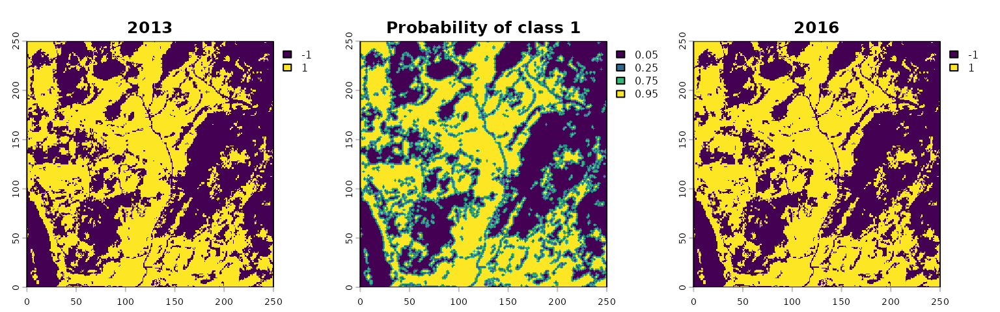
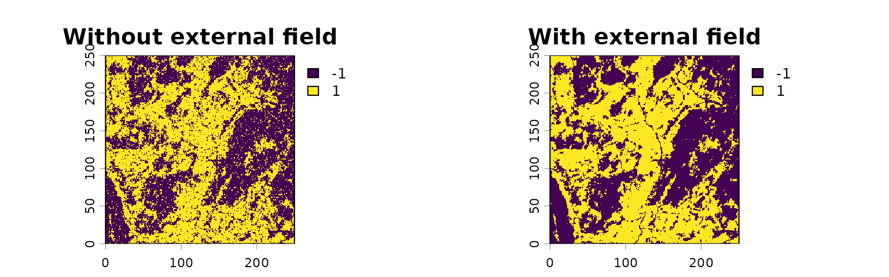

vignettes/external-field.Rmd
external-field.Rmdspatialising simulates changes in binary spatial
patterns using two main pressures: the external pressure B
and the local interaction strength J. Positive values of
B favor class 1, negative values favor class
-1, and larger absolute values have a stronger effect
across the pattern. Larger values of J make neighboring
cells more likely to have the same class, creating larger patches and
reducing isolated cells.
By default, B is constant across all cells, but
external_field allows a different adjustment for each cell,
for example based on a spatial probability map. At cell
,
the effective external pressure is then
.
Let’s see that on an example.
We use the 2013 Maine forest pattern as the initial state and the 2016 pattern as a visual reference. The 2016 pattern is not used to create the probability map or choose the simulation parameters.
library(terra)
library(spatialising)
maine2013 = rast(system.file("raster/maine2013.tif", package = "spatialising"))
maine2016 = rast(system.file("raster/maine2016.tif", package = "spatialising"))Moreover, we have a probability map p that represents
the probability of each cell being class 1.
p = rast(system.file("raster/maine_probability.tif", package = "spatialising"))In this example, the probability map is based only on the 2013
pattern and assumes that most cells keep their original class.1 We assume
that cells at class boundaries are more likely to change than cells
inside larger patches – so the boundary cells were given a 25% chance of
changing class, compared with 5% for other cells. Because p
is the probability of class 1, its possible values are
0.05, 0.25, 0.75, and 0.95.
names(maine2013) = "2013"
names(p) = "Probability of class 1"
names(maine2016) = "2016"
plot(c(maine2013, p, maine2016), nr = 1)
The external_field argument of
kinetic_ising() allows to use a spatially varying external
pressure. Its values are in the same units as B, so we need
to convert the probabilities in p to the pressure scale.
The map p gives the probability that each cell belongs to
class 1. To convert these probabilities to the model’s
pressure scale, we take their log-odds and divide by two. Because
B = 0 in this example, the converted values can be used
directly as external_field:
B = 0
external_field = 0.5 * log(p / (1 - p)) - BThe value J = 0.3 (local interaction strength) is chosen
only for this illustration. Using the same random seed makes it easier
to compare the effect of the spatial field.
set.seed(1)
without_field = kinetic_ising(maine2013, B = B, J = 0.3)
set.seed(1)
with_field = kinetic_ising(maine2013, B = B, J = 0.3, external_field = external_field)Compared with using B = 0 alone, the field makes core
cells less likely to change while allowing more change at class
boundaries.
names(without_field) = "Without external field"
names(with_field) = "With external field"
plot(c(without_field, with_field), nr = 1)
But in practice, the probability map could be based on other spatial variables, such as elevation, distance to roads, or other environmental factors; or it could be a prediction from a machine learning model.↩︎